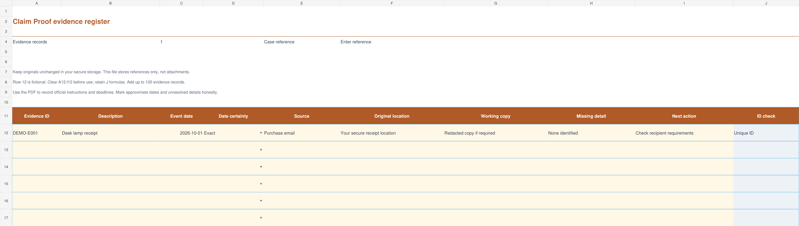

Give each item a reference.
Record an ID, date, source and filename for receipts, photos or correspondence. Keep the originals in your own folders.
MICRO TOOLS STUDIO / EVIDENCE RECORDS
For households and small businesses organizing warranty paperwork. Keep a dated record of receipts, correspondence and file references, then create an attachment list for the items you choose.
One-time digital download · Local browser workspace · No subscription
SEE THE JOB IT HELPS WITH
Give a receipt a stable ID, note its date and source, and record its filename. Select the records you want to include to produce a consistent attachment index.
WORKFLOW EXAMPLE
Fictional warranty receipt. Keep and attach the original files separately; they are not uploaded to this tool.
CLAIMPROOF WARRANTY RECORDS KIT · $9 USD ONE-TIME
The workspace starts blank. Add one record, see the summary, and save a JSON backup. CSV and text reports help you use or share your work.

Record an ID, date, source and filename for receipts, photos or correspondence. Keep the originals in your own folders.
Mark the items you plan to include. Review missing details and check the file references against the originals.
Export a list from the selected records, then gather and attach the original files through the recipient’s required process.
To begin, extract the ZIP and open START_HERE.html. Choose the browser workspace or the companion format that suits your workflow.
Organization aid only. Files are referenced, not uploaded or verified. It does not assess coverage, give legal advice, submit a claim or guarantee an outcome.
The browser workspace has been tested in current Chrome in a local preview. Local-file storage behavior varies; use JSON backups. Desktop or laptop use is recommended. The optional XLSX companion and fillable PDF require compatible apps; Google Sheets calculation checks passed; native Excel and Numbers checks are pending.
After purchase, use your Lemon Squeezy receipt or order page to download the ZIP. Keep the ZIP and your order number. Questions? Purchase support.
Buy the kit · $9 USD →No. The workspace stores the record and file reference, not the original attachment. Keep your receipts and photos separately and back up both the originals and your JSON records.
No. It helps prepare a record and attachment index. You review the details and submit through the manufacturer, seller or other recipient’s own process.
No. The name describes organizing supporting records. It does not validate evidence, assess coverage, provide legal advice or guarantee a claim outcome.
The local browser workspace, a 100-row XLSX register with its index, an eight-page fillable workbook, editable messages and a quick-start guide. The formats are separate and do not automatically synchronize.
TRY BEFORE YOU BUY
Use a fictional warranty receipt to see how the ID, date, source and file reference fit together.